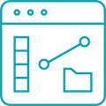
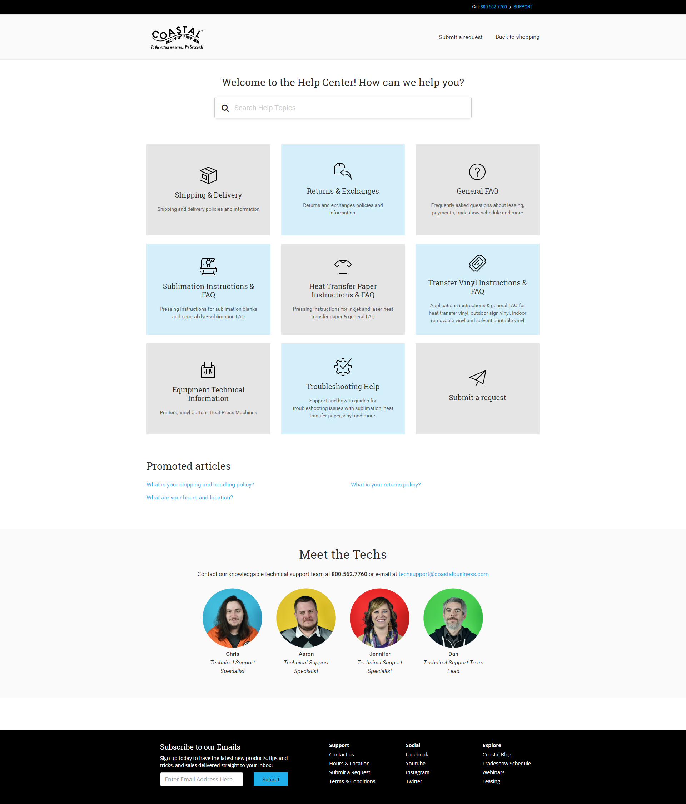
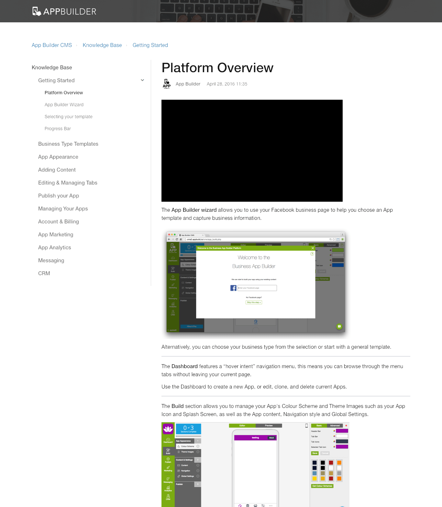
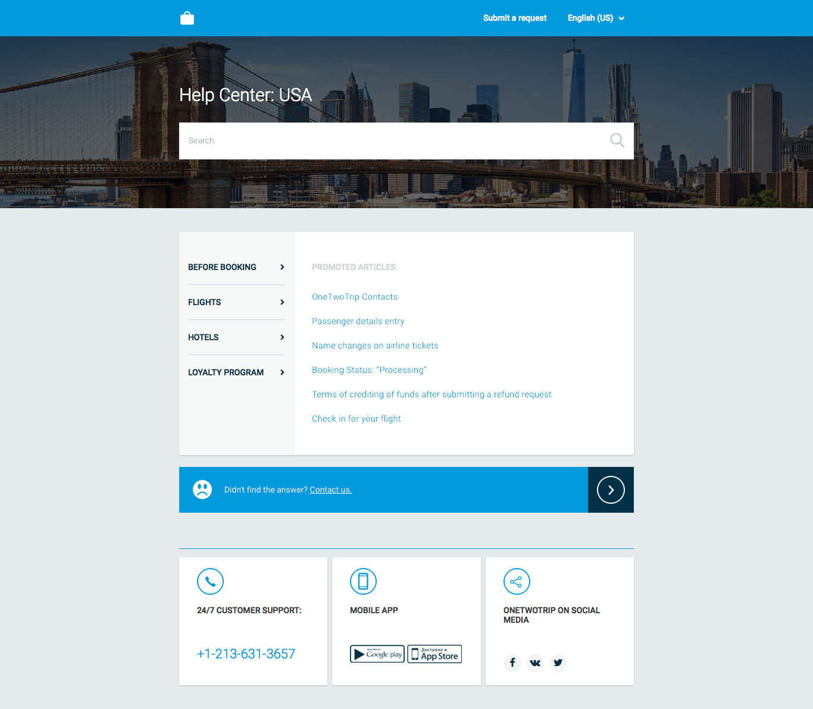
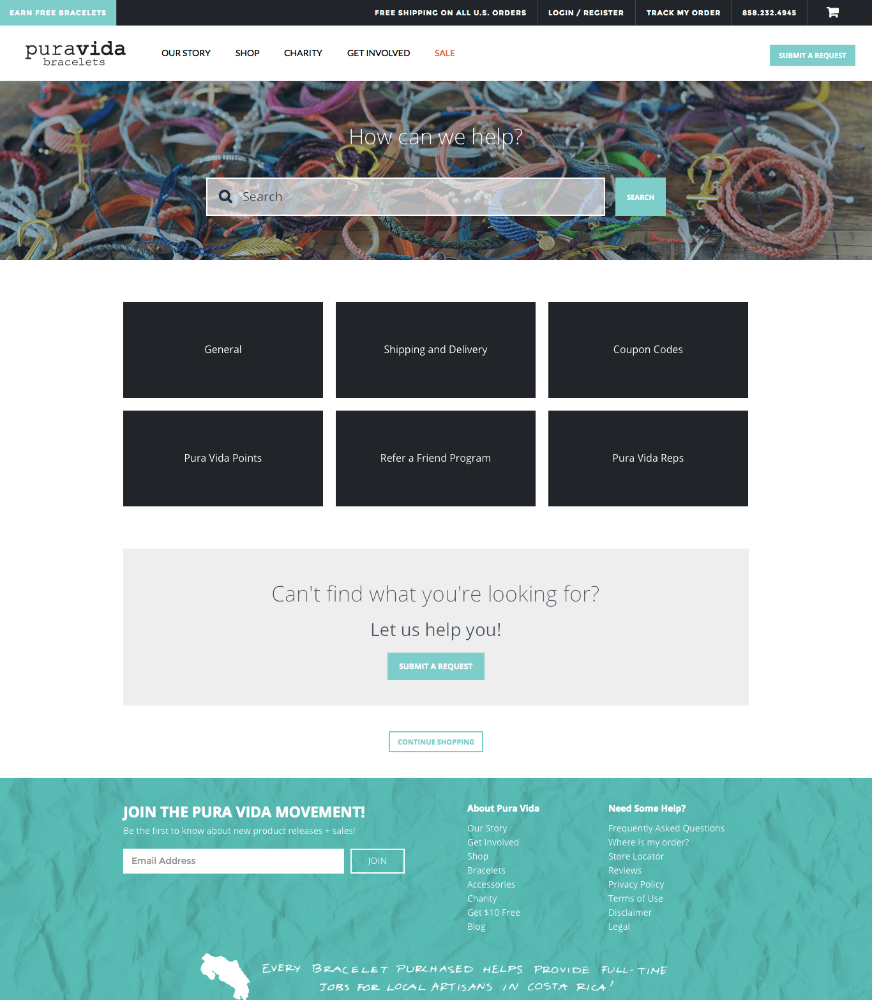

Need deep adjustments? This service is what you need.
 Questions
Customization service is a convenient and fast way to completely change your Help Center look according to your company corporate standards. Explore some details below.
This service is developed to completely meet all your requirements.
For example, we can make header and footer of your Help Center the same as on your main website, change any elements or the full layout of the theme and more.
If you need more basic changes, use the Branding service.
Open product pageThe cost of this service depends on the level of the task difficulty and is calculated individually in each case. The best way to start is to complete our questionnaire. It will take a couple of minutes and help us to understand your case and recommend the best solution. You can also contact us via the ticket form or hello@lotusthemes.com
It depends on the level of the task difficulty and is calculated individually in each case. The best way to start is to complete our questionnaire. It will take a couple of minutes and help us to understand your case and recommend the best solution. You can also contact us via the ticket form or hello@lotusthemes.com
We create a demo Help Center where you can check all the changes. Afterward, we install the chosen theme on your Help Center where you can test everything with your real content in the preview mode. You check the changes and publish everything when you are ready, the changes are published immediately.
No problem to buy it later as a separate order. You can do it whenever you want.
We don't customize themes created by other developers.
We always use one of our themes as a basis. It is reasonable because they are already completely responsive and properly tested. If you have any preferences, just let us know what theme you are interested in. If you have your design, please share it with us, and we will recommend what theme is the best as a basis.
The best way to start is to complete our questionnaire. It will take a couple of minutes and help us to understand your case and recommend the best solution. You can also contact us via the ticket form or hello@lotusthemes.com
You’re certainly more than welcome to give it a try. But this really depends on your level of experience with Zendesk and web development. All Zendesk templates we offer are provided with editable sources files and can be customized according to your requirements.
Please note, that all the future updates for the theme will not be available for automatic installation and support of the theme will not be available either.
Customization examples
We have hundreds of customers who chose Customization service. We would like to share how it worked with some of them here.
The special style for the category blocks of the Conway theme made the Help Center more eye-catching, user-friendly and modern.

We made the significant layout changes for the Branch theme and created the guide script which retrieves all sections and articles using Zendesk API. It allows easy navigation through the Help Center content.

The significant changes of our theme and sidebar navigation were made for OneTwoTrip Help Center to achieve a completely new look.

All the elements of our Flatrock theme including the header and footer were fully branded to achieve the feeling that the Help Center is a part of the primary website.
